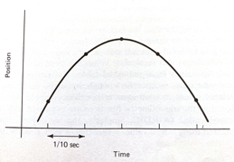

ENGR 1330 Computational Thinking with Data Science
Copyright © 2021 Theodore G. Cleveland and Farhang Forghanparast
Last GitHub Commit Date:
16: Exploratory Data Analysis¶
Data models
Performance metrics
Interpolation vs extrapolation
Data Science Inferences from Visual Display of Data¶
Recall our line chart tool, and the time-speed data
Consider the experimental data below
Elapsed Time (s) |
Speed (m/s) |
|---|---|
0 |
0 |
1.0 |
3 |
2.0 |
7 |
3.0 |
12 |
4.0 |
20 |
5.0 |
30 |
6.0 |
45.6 |
Show the relationship between time and speed. What can we learn about the relationship? Is it linear, quadratic, cubic, hyperbolic? How do we explore these questions?
First lets define a plotting function that plots observations and data model values on same chart. The convention in these notes is red markers are the data and blue curves are the model.
Note
In the context herein, the observations are the actual data; the model (a straight line, parabola, or some other functional relationship \(y=f(x)\)) is the data model. We may stipulate the structure of the model such as \(y=\text{slope}\cdot x + \text{intercept}\), or more conventionally \(y=mx+b\) and seek values of m and b that explain the observations.
import matplotlib.pyplot as plt
def make2plot(listx1,listy1,listx2,listy2,strlablx,strlably,strtitle):
mydata = plt.figure(figsize = (10,5)) # build a square drawing canvass from figure class
plt.plot(listx1,listy1, c='red', marker='v',linewidth=0) # basic data plot
plt.plot(listx2,listy2, c='blue',linewidth=1) # basic model plot
plt.xlabel(strlablx)
plt.ylabel(strlably)
plt.legend(['Observations','Model'])# modify for argument insertion
plt.title(strtitle)
plt.show()
return
Test our function, we will plot the data as red markers and the model as blue lines; in this instance we will just reuse data so the plot will look perfect, but its only to test the plotting function.
# Create two lists; time and speed - these represent observations
time = [0,1.0,2.0,3.0,4.0,5.0,6.0]
speed = [0,3,7,12,20,30,45.6]
First just plot the data as red markers
make2plot(time,speed,[0,0],[0,0],'time (sec.)','speed (m/s)','Plot of observations') # the blue line is all at 0,0
Now plot the same data as a blue line
make2plot([0,0],[0,0],time,speed,'time (sec.)','speed (m/s)','Plot of model only, ignore red marker') # the red markers all at 0,0

Now both on same graph (we are reusing the lists, so fit will appear perfect)
make2plot(time,speed,time,speed,'time (sec.)','speed (m/s)','Plot of model') # the red markers all at 0,0
Now we can consider a data model. For this example, lets simply stipulate that the relationship may be up to a 3-rd order polynomial.
\(y = \beta_0 + \beta_1 \cdot x + \beta_2 \cdot x^2 + \beta_2 \cdot x^3\)
where \(y\) in this example is speed in meters/second, and \(x\) is time in seconds. As a data model all we are doing is explaining the structure of the relationship, if we knew that it is a physical process we might adjust our model to be constant acceleration kinematics. However for the example, the polynomial will suffice.
# Create a data model - lets use a polynomial model
def polynomial(b0,b1,b2,b3,x):
# return y = b0 + b1*x + b2*x**2 + b3*x**3
polynomial=b0+b1*x+b2*x**2+b3*x**3
return(polynomial)
Now we have a data model, that returns speed given time according to a polynomial equation.
Lets dcompare some guesses at values for \(\beta_0,\beta_2,\beta_2,\beta_3\)
Parameter set #1
b0 = 0
b1 = 6
b2 = 0.12
b3 = 0
Parameter set #2
b0 = 0
b1 = 1.3
b2 = 0.75
b3 = 0.05
# prompt for inputs of b0,b1,b2,b3
# do some trial and error 0,1.3,0.75,0.05
#intercept=float(input('Enter b0 value'))
#linear=float(input('Enter b1 value'))
#quadratic=float(input('Enter b2 value'))
#cubic=float(input('Enter b3 value '))
intercept=0
linear=6
quadratic=0.12
cubic=0
# build a data model
modelSpeed = [] # empty list
for i in range(len(time)):
modelSpeed.append(polynomial(intercept,linear,quadratic,cubic,time[i]))
# Plotting results
make2plot(time,speed,time,modelSpeed,'time (sec.)','speed (m/s)','Plot of model and observations using parameter set #1')

# prompt for inputs of b0,b1,b2,b3
# do some trial and error 0,1.3,0.75,0.05
#intercept=float(input('Enter b0 value'))
#linear=float(input('Enter b1 value'))
#quadratic=float(input('Enter b2 value'))
#cubic=float(input('Enter b3 value '))
intercept=0
linear=1.3
quadratic=0.75
cubic=0.05
# build a data model
modelSpeed = [] # empty list
for i in range(len(time)):
modelSpeed.append(polynomial(intercept,linear,quadratic,cubic,time[i]))
# Plotting results
make2plot(time,speed,time,modelSpeed,'time (sec.)','speed (m/s)','Plot of model and observations using parameter set #2')
Now assess the model; which one seems to explain the observations better? That’s really the gist of exploratory data analysis.
The last plot looks kind of decent, how could we “measure” the model’s prediction value?
We can compute the difference between the observations and the model, add them all up and see how close to perfect we get.
# Prediction Error Function
def pred_err(list1,list2):
if len(list1)==len(list2):
pe = [] # empty list to store prediction errors
for i in range(len(list1)):
pe.append(list1[i]-list2[i])
return(sum(pe))
else:
print('incompatible lists, check your data')
return('false')
print(pred_err(speed,modelSpeed))
8.881784197001252e-15
Seems pretty great, except maybe the positive and negative errors are cancelling each outer leading us to falsely believe our model is awesome. A more strict error would be to consider absolute values as in:
# Prediction Error Function
def abs_err(list1,list2):
if len(list1)==len(list2):
pe = [] # empty list to store prediction errors
for i in range(len(list1)):
pe.append(abs(list1[i]-list2[i]))
return(sum(pe))
else:
print('incompatible lists, check your data')
return('false')
print(abs_err(speed,modelSpeed))
3.800000000000006
Or the commonly used sum of squared errors
# Prediction Error Function
def ssq_err(list1,list2):
if len(list1)==len(list2):
pe = [] # empty list to store prediction errors
for i in range(len(list1)):
pe.append(pow((list1[i]-list2[i]),2))
return(sum(pe))
else:
print('incompatible lists, check your data')
return('false')
print(ssq_err(speed,modelSpeed))
4.219999999999999
It becomes apparent quickly that it is a hastle to keep going back, so lets wrap things in a while loop so we can keep track of our trials, and make our tool interactive.
Note
You will need to copy-paste into a notebook to run the script below - be sure to include the functions above
quit=True
# put some default values
intercept=0
linear=0
quadratic=0
cubic=0
# here is the control loop
while quit:
# prompt for inputs of b0,b1,b2,b3
# do some trial and error 0,1.3,0.75,0.05
intercept=float(input('Enter b0 value, current value = '+str(intercept)))
linear=float(input('Enter b1 value, current value = '+str(linear)))
quadratic=float(input('Enter b2 value, current value = '+str(quadratic)))
cubic=float(input('Enter b3 value, current value = '+str(cubic)))
# build a data model
modelSpeed = [] # empty list
for i in range(len(time)):
modelSpeed.append(polynomial(intercept,linear,quadratic,cubic,time[i]))
# Plotting results
make2plot(time,speed,time,modelSpeed,'time (sec.)','speed (m/s)','Plot of model and observations')
# Squared Prediction Error
print('Current squared error = ',ssq_err(speed,modelSpeed))
stop = input('do you want to stop? y or n') # here is how we stop
if stop == 'y':
quit=False
else:
continue # keep going!
intercept=0
linear=1.3
quadratic=0.75
cubic=0.05
# build a data model
modelSpeed = [] # empty list
for i in range(len(time)):
modelSpeed.append(polynomial(intercept,linear,quadratic,cubic,time[i]))
# Plotting results
make2plot(time,speed,time,modelSpeed,'time (sec.)','speed (m/s)','Plot of model and observations using parameter set #2')

Now lets predict a value within our observations, say the speed at 4.5 seconds. Looking at the graph it looks like about 25 m/sec. But we have the data model, so just use it.
#mytime=float(input('enter an elapsed time'))
mytime = 4.5
myspeed = polynomial(intercept,linear,quadratic,cubic,mytime)
print('The estimated speed at t =',mytime,'is',myspeed,'meters per secund')
The estimated speed at t = 4.5 is 25.59375 meters per secund
Now lets predict a value beyond the observations, say the speed at 7 seconds. Looking at the graph the best we can say is if the curvature is extended the value is somewhere near 60 (surely bigger than 45). But beyond that we know nothing. The data model allows extrapolation simply because we have declared it the relationship that explains the observatons. If the model were based on some physical, chemical, or biological process we might actually be comfortable making extrapolations; here we will just stipulate that 1 more second is close to the observations, so we will extrapolate; again using our data model:
#mytime=float(input('enter an elapsed time'))
mytime = 7
myspeed = polynomial(intercept,linear,quadratic,cubic,mytime)
print('The estimated speed at t =',mytime,'is',myspeed,'meters per secund')
The estimated speed at t = 7 is 63.0 meters per secund
Our next section will examine a type of data model useful for interpolating data that are known to be accurate (very small measurement error)
Lagrangian Polynomial Data Model (for Interpolation)¶
The Starship rocket in the figure below sends a lot of telemetry data to both on-board and off-board (ground-based) control computers.

Suppose telemetry is received every 1/10 of a second, providing the altitude (position) of the craft, something like the figure below.

How can one estimate the altitude at intermediate times (between the 1/10 of a second “true” values)?
The problem is a type of interpolation problem similar to calculating material properties from tables for intermediate values by assuming a straight line passed between the two values from the table. However it may not be appropriate to assume that the altitudes are linear with time. The special challenge comes when we want to estimate intermediate values when there is a maximum or minimum in the tabular structure, and we will have to process many records for different cases.
The classical approach to such a problem is to fit a polynomial to the tabular results and interrogate the resulting polynomial to obtain estimates of the intermediate values. This prediction engine (the polynomial) is required to return the exact value at a observation location (in our case a 1/10 second interval). This requirement is quite distinct from other types of prediction engines we will study.
Lagrangian Interpolation¶
Polynomial interpolation is the method of determining a polynomial that fits a set of given points. There are several approaches to polynomial interpolation, of which one of the most well known is the Lagrangian method. The Lagrangian polynomial https://en.wikipedia.org/wiki/Lagrange_polynomial is the polynomial of order \(n-1\), where \(n\) is he number of tabular data pairs we wish to interpolate.
Suppose we have a table of data (or telemetry sent back from our rocket), of \(x-\) and \(f(x)\)-values:
$\(x~\)$ |
$\(~f(x)\)$ |
|---|---|
$\(x_1\)$ |
$\(f_1\)$ |
$\(x_2\)$ |
$\(f_2\)$ |
$\(x_3\)$ |
$\(f_3\)$ |
$\(x_4\)$ |
$\(f_4\)$ |
The highest order polynomial that can be passed through these four data pairs is a cubic. A Lagrangian form for such a cubic is
Notice that it is constructed of four terms, each of which is a cubic in \(x\); hence the sum is a cubic also. The pattern of each term is to form the numerator as a product of differences of the form \((x-x_i)\), omitting one \(x_i\) in each term, the ommitted term is used in the denominator as a replacement for \(x\) in each position in the numerator. In each term, the difference factor is multiplied by the value \(f_i\) corresponding to the \(x_i\) ommitted in the numerator. The Lagragian polynomial for other degrees of interpolating polynomials employs this same pattern of forming a sum of polynomials of the desired degree.
Of importance is that the polynomial is intended to be used for interpolation, that is the value we seek \(P(x^*)\) assumes we will supply \(x^*\) in the range \([x_1 , x_4]\). Going outside this range is called extrapolation, and interpolator-type prediction engines are the wromg tool!
Example 1¶
Consider the three observations below, estimate (predict) the value for \(f(2.3)\).
$\(x~\)$ |
$\(~f(x)\)$ |
|---|---|
1.1 |
10.6 |
1.7 |
15.2 |
3.0 |
20.3 |
The Lagrangian form of the highest order of polynomial that can pass through the 3 data pairs is the quadratic:
Once the denominators are completed, it is relatively straightforward to compute the estimate (prediction), in this case
At \(x=2.3\) the result is \(P_2(2.3)=18.38\).
Naturally, we want to use Computational Thinking principles, to pattern match and generalize the arithmetic as below.
def lagint(xlist,ylist,xpred):
# lagrangian interpolation of order len(xlist)-1
#
lagint = 0.0 # ypred is an accumulator, and will be output
norder = len(xlist)
for i in range(norder):
term = ylist[i] # build up terms of polynomial
for j in range(norder):
if (i != j):
term = term * (xpred-xlist[j])/(xlist[i]-xlist[j])
# pass # may not need this expression
lagint = lagint + term
# print(i,j) #debugging expression
return(lagint)
xtable = [1.1,1.7,3.0]
ytable = [10.6,15.2,20.3]
xwant = 2.3
print(round(lagint(xtable,ytable,xwant),2))
18.38
Example 2¶
This example is copied from https://rstudio-pubs-static.s3.amazonaws.com/286315_f00cf07beb3945d2a0260d6eaecb5d36.html
In the original source the author plots the resulting function, we can do the same here. First the observation set:
$\(x~\)$ |
$\(~f(x)\)$ |
|---|---|
0 |
7 |
2 |
11 |
3 |
28 |
4 |
63 |
Next we will plot the interpolating polynomial from \(x=0\) to \(x=4\) in steps of 0.1
xtable = [0.1,0.3,0.5,0.7,0.9,1.1,1.3]
ytable = [0.003,0.067,0.148,0.248,0.370,0.518,0.697]
xwant = 0.3
print(lagint(xtable,ytable,xwant))
0.067
# Observations
xtable = [0,2,3,4]
ytable = [7,11,28,63]
#
xpred = [] # empty list to store results for plotting
ypred = [] # empty list to store results for plotting
#
step_size = 0.10 # step size
how_many = int((xtable[len(xtable)-1])/step_size)
# build the predictions
for i in range(how_many+1):
xpred.append(float(i)*step_size)
ypred.append(lagint(xtable,ytable,float(i)*step_size))
#print(lagint(xtable,ytable,xwant))
import matplotlib.pyplot # the python plotting library
myfigure = matplotlib.pyplot.figure(figsize = (6,6)) # generate a object from the figure class, set aspect ratio
matplotlib.pyplot.scatter(xtable, ytable ,color ='red') # The observations as points
matplotlib.pyplot.plot(xpred, ypred, color ='blue') # the polynomial
matplotlib.pyplot.xlabel("Input Value")
matplotlib.pyplot.ylabel("Function Value")
mytitle = "Interpolating Polynomial Fit to Observations\n "
mytitle += "Blue Markers are Observations " + "\n"
mytitle += "Red Curve is Fitted Polynomial "+ "\n"
matplotlib.pyplot.title(mytitle)
matplotlib.pyplot.show()
xtable = [0,2,3,4]
ytable = [7,11,28,63]
ypred = []
for i in range(len(xtable)):
ypred.append(lagint(xtable,ytable,xtable[i]))
print('Interpolation Error',ssq_err(ytable,ypred))
Interpolation Error 0.0
Now to finish the story lets apply our generic polynomial model to the same data and see what we can learn
# observations
xtable = [0,2,3,4]
ytable = [7,11,28,63]
#
# build a data model
intercept=7
linear=0.69
quadratic=-0.95
cubic=1.06
#
xpred = [] # empty list to store results for plotting
ypred = [] # empty list to store results for plotting
#
step_size = 0.10 # step size
how_many = int((xtable[len(xtable)-1])/step_size)
# build the predictions
for i in range(how_many+1):
xpred.append(float(i)*step_size)
ypred.append(polynomial(intercept,linear,quadratic,cubic,xpred[i]))
make2plot(xtable,ytable,xpred,ypred,'Input Value','Function Value','Plot of model and observations')
xtable = [0,2,3,4]
ytable = [7,11,28,63]
ypred = []
for i in range(len(xtable)):
ypred.append(polynomial(intercept,linear,quadratic,cubic,xtable[i]))
print('Interpolation Error',ssq_err(ytable,ypred))
Interpolation Error 5.9031999999999885
Unlike the Lagrangian interpolation, here we can extrapolate, simply by using the data model.
References¶
Grus, Joel (2015-04-14). Data Science from Scratch: First Principles with Python (Kindle Locations 1190-1191). O’Reilly Media. Kindle Edition.
Call Expressions in “Adhikari, A. and DeNero, J. Computational and Inferential Thinking The Foundations of Data Science” https://www.inferentialthinking.com/chapters/03/3/Calls.html
Functions and Tables in “Adhikari, A. and DeNero, J. Computational and Inferential Thinking The Foundations of Data Science” https://www.inferentialthinking.com/chapters/08/Functions_and_Tables.html
Visualization in “Adhikari, A. and DeNero, J. Computational and Inferential Thinking The Foundations of Data Science” https://www.inferentialthinking.com/chapters/07/Visualization.html
Documentation; The Python Standard Library; 9. Numeric and Mathematical Modules https://docs.python.org/2/library/math.html
Laboratory 16¶
Examine (click) Laboratory 15 as a webpage at Laboratory 16.html
Download (right-click, save target as …) Laboratory 15 as a jupyterlab notebook from Laboratory 16.ipynb
Exercise Set 16¶
Examine (click) Exercise Set 15 as a webpage at Exercise 16.html
Download (right-click, save target as …) Exercise Set 15 as a jupyterlab notebook at Exercise Set 16.ipynb